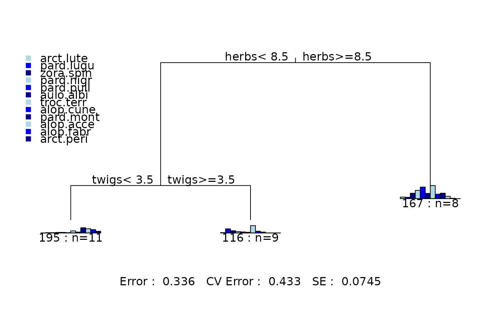

Principle Components Plot of a Multivariate Rpart Object
rpart.pca.RdPlots a PCA of the rpart object on the current graphics device.
Usage
# S3 method for class 'pca'
rpart(tree, pts = TRUE, plt.allx = TRUE, speclabs = TRUE,
specvecs = TRUE, wgt.ave = FALSE, add.tree = TRUE,
cv1 = 1, cv2 = 2, chulls = TRUE, interact = FALSE, ...)Arguments
- tree
A fitted object of class
rpartcontaining a multivariate regression tree.- pts
If
TRUE, large points representing the leaf means are plotted.- plt.allx
If
TRUE, small points representing individual cases are plotted.- speclabs
If
TRUEthe labels of the response variables are plotted.- specvecs
If
TRUEthe vectors of the response variables are plotted providedwgt.aveisFALSE.- wgt.ave
If
TRUEuse weighted averages of responses not vectors.- add.tree
If
TRUEadd the tree structure to the plot.- cv1
Defines the principal component to plot horizontally – but see
interact.- cv2
Defines the principal component to plot vertically – but see
interact.- chulls
If
TRUEadds convex hulls to thr tree groups.- interact
If
TRUEthe plot can be viewed in dimensions by left-clicking to top-left, bottom-right or bottom-left (reset).- ...
arguments to be passed to or from other methods.
Details
This function plots a PCA biplot of the group means (leaves) of
multivariate regresssion objects of class rpart.
The responses and group means and indivdual cases can be shown on the plot.
If responses are positive (eg species-environment data) weighted averages of
responses can be plotted.
Examples
data(spider)
fit<-mvpart(data.matrix(spider[,1:12])~herbs+reft+moss+sand+twigs+water,spider)

rpart.pca(fit)
 rpart.pca(fit,wgt.ave=TRUE,interact=TRUE)
rpart.pca(fit,wgt.ave=TRUE,interact=TRUE)